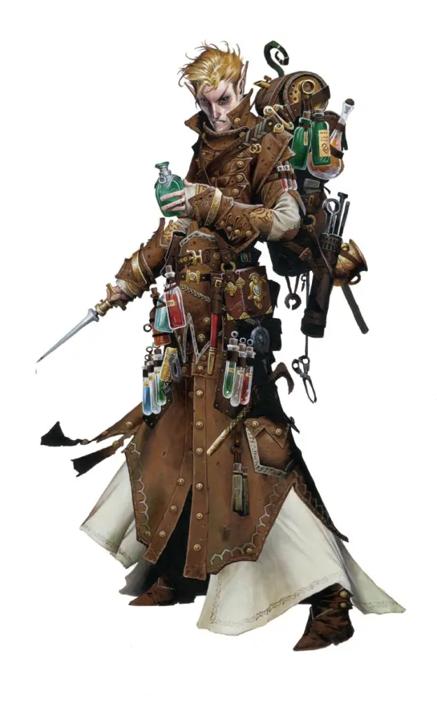
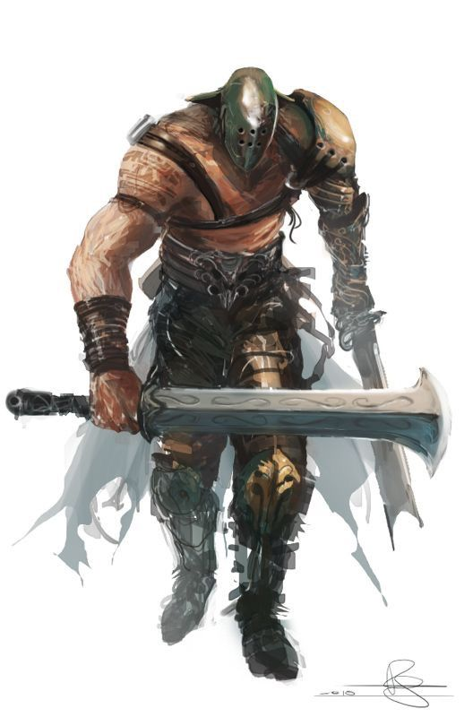
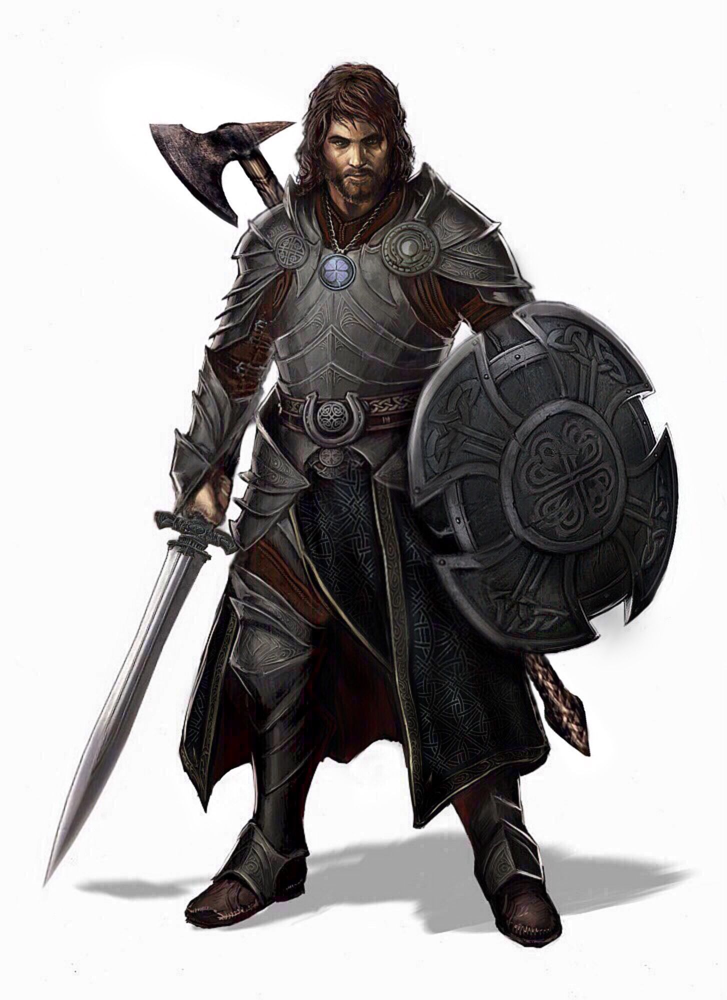
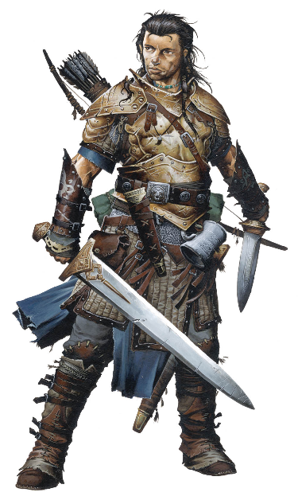
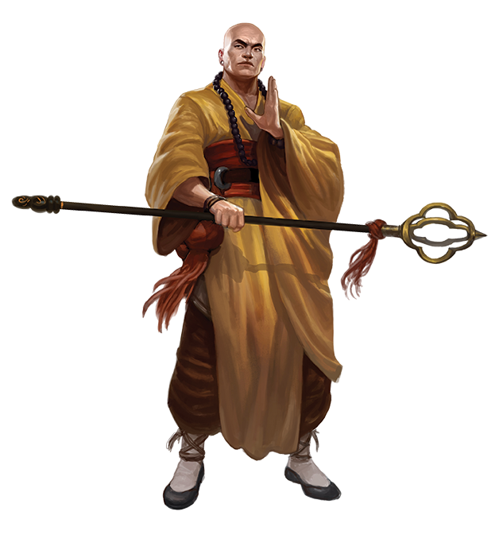
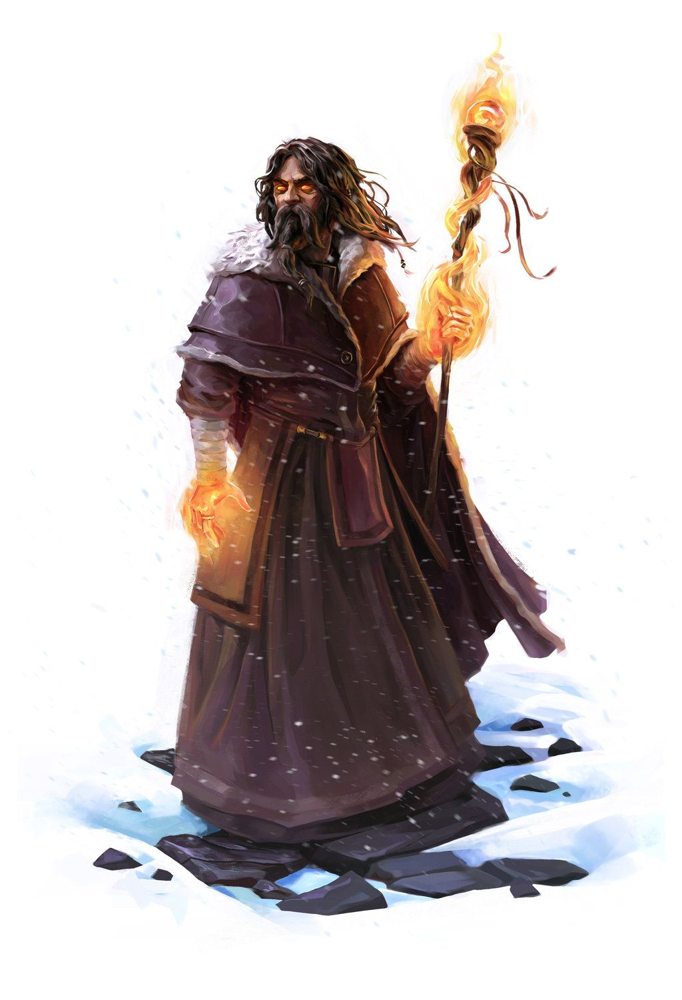
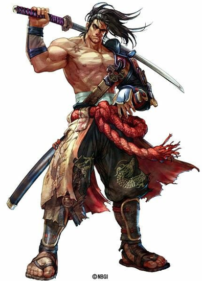
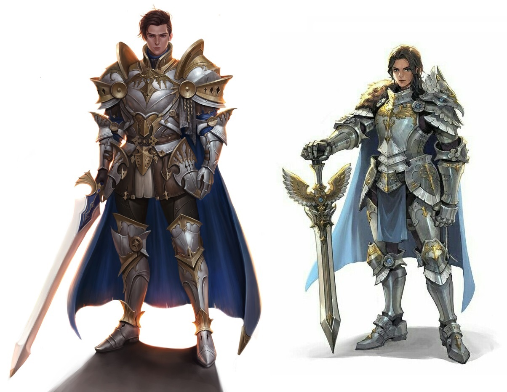
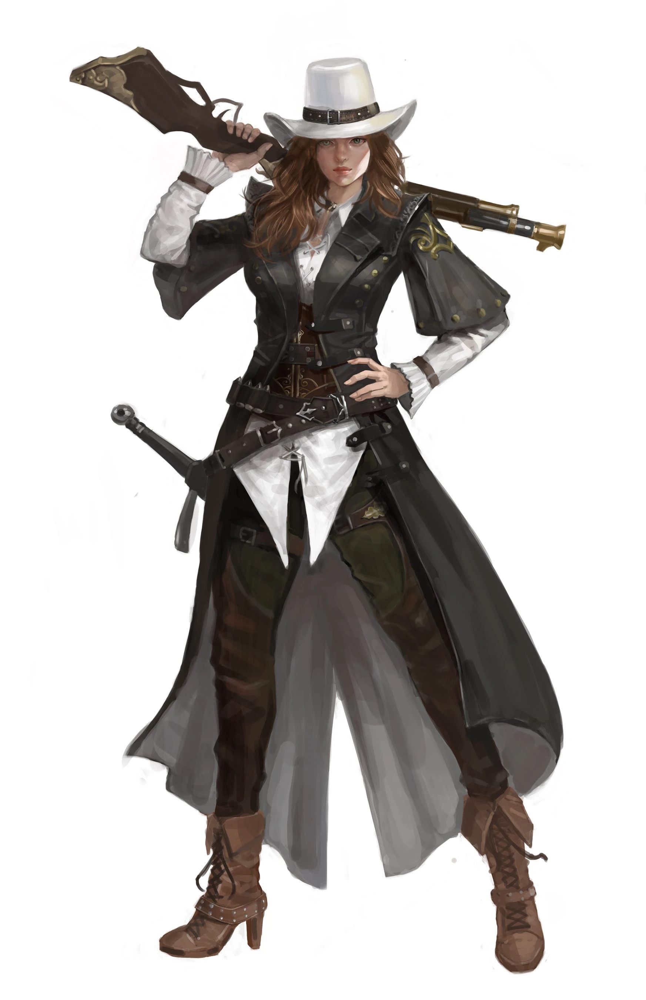

• Perícias
• Regras (Resumo)
• Glossário
• Itens e Equipamentos NEW
Alquimista
Especialista na fabricação e uso de poções e misturas especiais, o alquimista é um profundo estudioso que combina ciência e magia para alcançar os mais diversos efeitos através de seus inventos.
➢ Alquimista (inerente): o Alquimista é um estudioso das artes da Química e Biologia, recebendo estas perícias gratuitamente.
➢ Arremessar Poção (ativa): o personagem consegue arremessar poções com precisão, até uma distância de 5 metros, sem a necessidade de testes.
➢ Fabricar Poções (ativa): o personagem consegue fabricar poções de nível 1/2/3/4/5 por metade do custo praticado pelos comerciantes. O tempo necessário depende da quantidade e complexidade das poções.
➢ Proficiência Alquímica (passiva): aumenta a eficiência das poções fabricadas em 10/20/30/40/50%.
➢ Auto-poção (reação): devido à sua familiaridade, o Alquimista reage reflexivamente ao perigo consumindo rapidamente uma poção que tenha consigo. Ao receber dano, o jogador pode consumir uma poção de cura ou suporte imediatamente, sem gastar sua ação. Esta habilidade pode ser usada até 1/2/3/4/5 vezes por batalha.
Arqueiro

O Arqueiro é o herói especializado no uso do arco e flecha, uma das poucas armas físicas de longo alcance. Ele dedica sua vida e todo seu treinamento para atingir a perfeição no uso do arco.
Para realizar um ataque básico à distância, role a Destreza do personagem (ao invés da Força) para calcular o valor de ataque.
➢ Recuada Estratégica (inerente): uma vez por combate, ao receber dano, o personagem pode utilizar esta habilidade para escapar dos atacantes próximos e se deslocar para outra posição no campo de batalha (inimigos que estavam atacando o personagem passam a atacar algum outro herói, caso exista). Não consome o turno ao ser realizada.
➢ Disparo Crítico: o personagem efetua um poderoso disparo, causado dano crítico que aumenta o ataque em +1d/+2d/+3d/+4d/+5d e ignora 10 de Proteção do oponente. Custa 5 PMs.
➢ Concentração: ao ativar, o personagem gasta um turno estudando seus oponentes e o campo de batalha. Durante seus próximos 3 turnos, recebe +1/+2/+3/+4/+5 em Destreza no cálculo de dano utilizando arco. Custa 5 PMs.
➢ Esquiva Aprimorada (passiva): o personagem recebe +1/+2/+3/+4/+5 em Esquiva.
➢ Perícia com Arcos (passiva): ver em Perícia com Armas.
Assassino

O Assassino é um aventureiro sombrio, especializado em eliminar seus alvos rápida e furtivamente.
Facas, adagas e punhais rolam Destreza ao invés da Força para o cálculo do ataque.
➢ Avanço Furtivo (inerente): uma vez por combate, permite se mover pelo campo de batalha sem gastar sua ação, podendo, por exemplo, se mover e logo em seguida atacar. Abater um inimigo (ou participar de um abate) permite utilizar esta habilidade novamente.
➢ Apunhalar (passiva): o personagem recebe bônus de ataque igual a +1d/+2d/+3d/+4d/+5d ao atacar um oponente pelas costas utilizando facas, adagas ou punhais. Apunhalar não pode ser usada duas vezes seguidas contra o mesmo alvo.
➢ Envenenar Lâmina: este ataque envenena o alvo, causando dano adicional de +2/+4/+6/+8/+10 que ignora Proteção e resistências. Durante as próximas 4 rodadas, a vítima perde 2/4/6/8/10 PVs no início do seu próprio turno. Custa 5 PMs.
Esta habilidade só pode ser usada ao atacar com facas, adagas ou punhais. Algumas criaturas são imunes a veneno, não sendo afetadas por ela.
➢ Esquiva Perfeita (passiva): o Assassino pode desviar de qualquer ataque que consiga ver. Em vez de sua esquiva normal, ele pode realizar uma esquiva perfeita com 10/20/30/40/50% de chance de sucesso, independentemente da precisão do alvo. Custa 1 PM (em caso de falha, o PM não é gasto).
Bárbaro

Bárbaros são como são chamados os poderosos guerreiros das montanhas do norte. Possuem uma civilização primal, baseada na caça e pesca, e o estudo é substituído pela força e sabedoria. Sua arma favorita é o machado.
➢ Bárbaro (inerente): recebe a perícia Sobrevivência gratuitamente. Bárbaros não sabem ler, escrever ou se portar em público, nem podem equipar armaduras pesadas.
➢ Frenesi: ao ativar, o personagem entra em estado de Fúria. Neste estado, ele recebe bônus temporário de +1/+2/+3/+4/+5 em Força e +10/+20/+30/+40/+50 de Vida, mas sua Proteção é reduzida a zero e ele não pode esquivar, bloquear, fugir nem ativar habilidades, somente atacar. Após o término da Fúria sofre redutor cumulativo de -1/-2/-3/-4/-5 em Força até descansar. Não tem custo.
➢ Pele de Ferro (passiva): o personagem reduz em 2/4/6/8/10 todo o dano recebido pós-mitigação.
➢ Vigor (passiva): o personagem possui deslocamento básico e resistência à fadiga duas vezes superior aos outros integrantes da sua raça. Além disso, recebe 5/10/15/20/25 de Vida adicional.
➢ Perícia com Machados e Martelos (passiva): ver em Perícia com Armas.
Berserker

Berserker é uma espécie de bárbaro mais bruto, conectado com sua ira primal e os espíritos selvagens. Eles se tornam temíveis em batalha, perdendo o controle sobre suas próprias ações, podendo inclusive investir contra seus próprios aliados.
➢ Ira (inerente): o Berserker fica mais forte à medida que recebe dano durante a batalha. A cada 4 de Vida perdida, o personagem ganha +1 de ataque. Caso seja curado ou regenere, ele perde o bônus recebido (proporcional ao valor de vida restaurado). Assim como o Bárbaro, não sabem ler, escrever ou se portar em público, nem podem equipar armaduras pesadas.
➢ Frenesi: ver em Bárbaro.
➢ Força Violenta: o personagem desfere um violento ataque que causa dano extra ao inimigo e a si mesmo. Investe sobre o alvo com bônus de +1d/+2d/+3d/+4d/+5d em ataque, porém com redutor de -1 em Precisão. O personagem também causa 1/2/3/4/5 de dano a si mesmo, que não pode ser reduzido.
➢ Perícia com Machados e Martelos (passiva): ver em Perícia com Armas.
Gladiador
O Gladiador é o herói das arenas. Sua origem pode ser das mais diversas, quem sabe um poderoso guerreiro tribal ou um nobre que caiu em desgraça. Seja como for, ele agora tem um único propósito: lutar pela glória, prestígio e poder.
➢ Mestre-das-armas (inerente): o personagem consegue utilizar quase qualquer arma corpo-a-corpo sem penalidade. Isso inclui as armas comuns e exóticas, como espada, espada de duas mãos, lança, mangual, maça, etc.
➢ Adaptador: devido às suas origens e treinamento, o Gladiador pode manifestar habilidades diversas. O jogador pode escolher Habilidades Especiais de outras classes para seu personagem. Não é preciso decidi-las no momento da criação, apenas quando for utilizar os pontos de classe. Não é possível escolher habilidades inerentes, nem habilidades que só possuam um nível.
Cavaleiro
O destemido Cavaleiro é treinado no combate corpo-a-corpo. Pode utilizar variadas armas, escudos e armadura pesada. É o mestre do combate.
➢ Perícia com Escudo (inerente): ver Perícia com Escudo.
➢ Contragolpe: no final de seu turno, o personagem pode pagar o custo da habilidade e assumir uma postura defensiva. Durante esta rodada, os ataques físicos corpo-a-corpo recebidos tem 50% de chance de serem contra-atacados, permitindo ao personagem imediatamente desferir um ataque básico. Custa 5 PMs.
➢ Golpe Fulminante: desfere um poderoso ataque com bônus de 1d/2d/3d/4d/5d de ataque e +1/+2/+3/+4/+5 de Precisão. Custa 5 PMs.
➢ Perícia com Espadas e Lanças (passiva): ver em Perícia com Armas.
Feiticeiro Místico

Também conhecidos como Mystic Knights, estes lendários espadachins do Oriente combinam sua proeza física com as artes mágicas para combater seus inimigos explorando suas fraquezas. São especialmente efetivos em batalhas longas contra inimigos poderosos.
➢ Casca Mágica (inerente): uma vez por batalha, quando os PVs do personagem forem reduzidos a 40% ou menos (arredondado para baixo), conjura automaticamente um encantamento sobre si sem gastar sua ação. O Encantamento reduz em 50% todo dano mágico recebido pós-mitigação e dura 4 rodadas.
➢ Lâmina Arcana: o personagem gasta um turno encantando sua própria espada ou a de um aliado, fornecendo 4/8/12/16/20 de dano elemental (à sua escolha) por 4 rodadas. Não acumula consigo mesma. Custa 5 PMs.
➢ Escudo Arcano: o personagem gasta um turno encantando sua própria armadura ou a de um aliado, criando um escudo mágico que bloqueia 4/8/12/16/20 por ataque de dano físico por 4 rodadas. Não acumula consigo mesma. Custa 5 PMs.
➢ Afinidade com Elemento: o personagem gasta um turno encantando sua própria armadura ou a de um aliado, aumentando grandemente sua resistência elemental. Aumenta em 10/20/30/40/50 a resistência elemental do alvo por 4 rodadas. Não acumula consigo mesma. Custa 5 PMs.
➢ Perícia com Espadas (passiva): ver em Perícia com Armas.
Lutador
Um violento guerreiro, especializado em ações ofensivas. Pode equipar duas espadas. Não pode equipar armaduras pesadas.
➢ Briga (inerente): Ao atacar um alvo por mais de um turno seguido, ganha ataque bônus igual sua Força. Atacar outro alvo reinicia esse efeito.
➢ Aparar: caso esteja utilizando duas espadas, ou uma espada de uma mão e a mão esquerda vazia, o personagem pode usar Aparar com uma Defesa Ativa contra ataques corpo-a-corpo. Oferece 50% de chance de reduzir um ataque físico (pré-mitigação) recebido no valor do bônus da arma equipada (considerar somente o bônus inerente; em caso de duas espadas, considere o maior bônus).
➢ Golpe Duplo: caso esteja equipando duas armas, o personagem desfere dois ataques seguidos contra o mesmo alvo. O segundo ataque utiliza a mão esquerda (ou direita, se o personagem for canhoto) e possui limite de 1/2/3/4/5 dados na rolagem de ataque. Custa 5 PMs.
➢ Destruir Armadura: o personagem desfere um violento ataque que tem 50% de chance de reduzir a armadura do oponente em 10/20/30/40/50 durante 4 rodadas. Não acumula. Custa 5 PMs.
➢ Perícia com Espadas (passiva): ver em Perícia com Armas.
Monge
Monges são os guerreiros eremitas que aprimoram seu corpo e mente em busca da perfeição.
➢ Flagelo do Mal (inerente): o monge causa dano físico extra igual à sua Força e recebe dano físico reduzido igual à sua Vitalidade quando enfrenta mortos-vivos e demônios.
➢ Curar (feitiço): restaura até 1d6/2d6/3d6/4d6/5d6 + INT de vida de um personagem próximo. Também pode ser utilizada para causar a mesma quantidade em dano sagrado contra mortos-vivos. Custa 5 PMs.
➢ Punho Supremo de Asura: depois de canalizar a energia espiritual por um turno, o Monge concentra toda sua energia em um único e poderoso golpe. Para cada 5 PMs gastos nesta habilidade, ele aumenta o ataque em 1d6, até um máximo de +2d/+4d/+6d/+8d/+10d.
➢ Punhos de Ferro (passiva): devido ao seu intenso treinamento em artes marciais, o personagem recebe bônus de ataque igual ao seu Nível de Personagem + 1 quando luta desarmado (ambas as mãos).
➢ Postura Diamantina: o personagem assume uma postura completamente defensiva, reduzindo em 50/60/70/80/90% todo dano de combate pré-mitigação recebido, seja ele físico, mágico ou mesmo divino. Enquanto estiver canalizando, cura +2/+4/+6/+8/+10 PVs no final de cada turno. A canalização dura até 3 turnos, mas pode ser cancelada antes disso pela vontade do Monge ou por algum efeito de cancelamento. Custa 5 PMs.
Piromante
Feiticeiros do Leste distante, especializados no domínio elementalista do fogo.
➢ Conhecimento Arcano (inerente): Magos e feiticeiros podem utilizar seus conhecimentos para detectar magia e identificar itens mágicos menores. Além disso, o Piromante consegue realizar pequenos truques rápidos com chamas sem gastar mana.
➢ Bola de Fogo (feitiço): conjura um projétil de fogo que viaja uma curta distância com ataque igual a 1d6/2d6/3d6/4d6/5d6 + Inteligência x 1d6 que causa dano mágico do elemento Fogo. Custa 5 PMs.
➢ Imolação (feitiço): conjura um encantamento que envolve a si mesmo em chamas durante 4 rodadas. Enquanto estiver encantado, no início do seu turno o personagem causa +2/+4/+6/+8/+10 de dano mágico por Fogo a todos os inimigos próximos. Além disso, inimigos que o ataquem corpo-a-corpo também sofrem a mesma quantidade de dano. Custa 5 PMs.
➢ Abrasar (feitiço): incendeia o alvo, causando inicialmente 1d6/2d6/3d6/4d6/5d6 de dano mágico de fogo. Durante 3 rodadas, a vítima fica incendiada, recebendo 1d6/2d6/3d6/4d6/5d6 de dano mágico por fogo no início do turno dela e reduzindo toda cura que receberia em 50% enquanto durar o efeito. A habilidade não acumula, mas conjurar sobre o mesmo alvo reinicia o efeito. Custa 5 PMs.
➢ Explosão de Chamas (feitiço): após conjurar, causa 1d6/2d6/3d6/4d6/5d6 de dano em todos os inimigos em área. Aliados muito próximos também sofrem dano. Custa 5 PMs.
Ronin
Outrora um poderoso guerreiro da misteriosa sociedade Oriental, o Ronin é um samurai sem mestre e sem honra. Pode ter sido abandonado ou expulso por seu mestre, e falhou em cometer o suicídio ritual, conhecido como seppuku. Agora vive uma vida de andarilho em busca de redenção.
Todo Samurai segue o bushido, "O Caminho do Guerreiro", um código ético e moral que determinada a conduta honrada. Eles vivem e morrem pela lâmina, o que se reflete em seu estilo de luta puramente ofensivo.
➢ Daisho (inerente): você começa com uma katana e uma wakizashi gratuitamente. Esse conjunto é conhecido como daisho. Estas armas recebem bônus de ataque igual ao seu Nível de Classe + 1. Além disso, os ataques realizados pela katana ignoram 10% da proteção física do alvo. Nas mãos de outras pessoas, as armas se comportam como peças comuns — com exceção de Ronins e Samurais.
Ao utilizar outras armas, o personagem sofre redutor de -4/-8/-12/-16/-20 (nos níveis 1/3/5/7/9) de ataque em todas as jogadas de combate. Se qualquer uma as armas for perdida, o personagem fica obstinado em recuperá-la, ignorando qualquer outra missão. Caso não seja capaz de recuperá-la, é possível ter uma nova arma forjada por um grande mestre (o que geralmente exige um pagamento de alto custo).
➢ Grito de Kiai: desfere um poderoso ataque acompanhado de um grito intimidador. Ao ativar, o personagem substitui a rolagem de ataque de 1d6 por um 6 automático, até um máximo de 2/4/6/8/10 rolagens. Custa 5 PMs.
➢ Issoku Itto: o personagem avança até qualquer inimigo alvo da batalha e o ataca com bônus de +1/+2/+3/+4/+5 em Precisão. Custa 5 PMs.
➢ Iaijutsu (passiva): seu primeiro ataque contra um alvo na batalha ganha ataque bônus igual a +4/+8/+12/+16/+20.
Templário
Templários formam uma ordem menor e mais popular que os lendários Paladinos. São cavaleiros sagrados, nobres e honrados em seu propósito.
Perícia com Escudo (inerente): ver Perícia com Escudo.
➢ Curar: ver em Monge.
➢ Dom da Bravura: Após uma oração (1 turno), concede bravura em combate para si ou um aliado valoroso próximo. O alvo recebe +1/+2/+3/+4/+5 de Precisão e +2/+4/+6/+8/+10 de dano, além de bônus de +2 em testes contra qualquer forma de medo, natural ou mágico. Dura 4 rodadas. Custa 5 PMs.
➢ Dom da Vontade: através de um ato supremo de força de vontade, o personagem passa a causar dano mágico com seus ataques, podendo ferir criaturas que sejam afetadas apenas por magia ou armas mágicas. Após uma oração (1 turno), o Templário converte 50% dos seus ataques básicos em dano Sagrado pelo restante do combate. Custa 5 PMs.
➢ Sacrifício: efetua um poderoso golpe que recebe +1 de ataque adicional para cada 2 PVs pagos ao ativar a habilidade.
➢ Perícia com Espadas e Lanças (passiva): ver em Perícia com Armas.
Pistoleiro
Estes rebeldes não temem o progresso e o uso de novas tecnologias. Os pistoleiros desprezam os procedimentos antiquados da magia ao mesmo tempo que consideram a luta corpo-a-corpo e uso de arco e flechas “primitivo” demais. Estão sempre procurando uma oportunidade para exibir seus talentos.
Para realizar um ataque básico à distância, role a Destreza do personagem (ao invés da Força) para calcular o valor de ataque. Ataques com armas de fogo não podem ser esquivados ou bloqueados de forma tradicional. Armas de fogo causam metade dano físico, metade Fogo.
➢ Mestre da Pólvora (inerente): o pistoleiro pode equipar, utilizar e realizar manutenção em armas de fogo. Elas utilizam pólvora, e podem efetuar um único disparo. O pistoleiro pode gastar um turno para recarregar todas as suas armas.
➢ Mirar: o Pistoleiro pode gastar seu turno mirando um alvo. Para cada turno gasto, aumenta o dano do seu próximo ataque contra o alvo em 50%, até um máximo de 100%. Só afeta o alvo principal do ataque.
➢ Revólver: requer um revólver equipado. Efetua um ataque a distância que causa dano adicional de 1d6/2d6/3d6/4d6/5d6. Pode-se equipar até dois revólveres.
➢ Espingarda: requer uma espingarda equipada. Causa dano adicional de 1d6/2d6/3d6/4d6/5d6 + 2x Destreza em uma pequena área em frente ao personagem, empurrando os alvos atingidos. O dano é reduzido em 50% em alvos que estejam atrás de outro personagem ou que não estejam à distância corpo-a-corpo. Não pode ser equipado em conjunto com um rifle.
➢ Rifle: requer um rifle equipado. O ataque causa dano adicional de 1d6/2d6/3d6/4d6/5d6 e ignora 10/20/30/40/50 de Proteção do alvo e causa sangramento. Não pode ser usado à queima roupa. Não pode ser equipado em conjunto com uma espingarda.
➢ Granadeiro: requer granadas. Causa dano adicional de 1d6/2d6/3d6/4d6/5d6 em área por meio de explosivos.
➢ Executar (passiva): ataques com arma de fogo tem 25% de chance de causar acerto crítico, dobrando o dano causado.
➢ Perícia com Armas: o personagem domina o uso de determinada arma. Quando utiliza-a em combate, recebe Ataque extra igual à metade do bônus base da arma (exemplo: ao utilizar uma arma com Ataque +4, recebe +2 Ataque extra).
➢ Perícia com Escudo: o personagem tem 50% de chance de bloquear ataques ao utilizar escudos, reduzindo o dano pré-mitigação. O bloqueio pode ser utilizado contra ataques físicos corpo-a-corpo ou a distância, ou contra mágicas de projétil, vindos de frente ou do lado do escudo.
➢ Perícia Avançada com Armas: o personagem domina completamente o uso de determinada arma. Quando utiliza-a em combate, recebe Ataque extra igual ao bônus base da arma (exemplo: ao utilizar uma arma com Ataque +4, recebe +4 Ataque extra).
• Atributos: são as características primárias dos personagens. Ao subir um nível de personagem, o personagem ganha 1 ponto de atributo.
• Força: mede a robustez do personagem, permite levantar objetos pesados, etc. Cada ponto aumenta o ataque com armas corpo-a-corpo em 1d6 e aumenta a Vida em +4.
• Destreza: mede a agilidade e domínio corporal do personagem, permite fazer malabarismos e movimentos que exijam precisão. Cada ponto aumenta o ataque com armas a distância (e algumas outras) em 1d6, aumenta 1 em Precisão e 1 em Esquiva.
• Inteligência: mede o raciocínio e sabedoria para tarefas que exijam concentração e estudo. Cada ponto aumenta a eficiência de feitiços em 1d6 e aumenta a Mana em 10.
• Vitalidade: mede a resistência do personagem a dano, doenças e condições malignas. Cada ponto aumenta a Vida em 12.
• Características Secundárias: são as características que, no geral, depende dos atributos. Não é possível alocar pontos diretamente nelas, mas muitas delas são afetadas pelos atributos.
• Vida: é o "life" máximo do personagem. A Vida inicial do personagem é de 12, aumentada pela Força, Vitalidade e itens.
• Mana: é a reserva de energia mística inerente aos seres vivos. É o combustível para realizar magia. A Mana inicial é de 10, aumentada pela Inteligência e itens.
• Pontos de Vida (PVs): são a quantificação da Vida atual. Um poção, por exemplo, recupera seus PVs. Já um amuleto pode aumentar sua Vida (ou seja, seus PVs máximos).
• Pontos de Mana (PMs): similar ao descrito acima.
• Precisão e Esquiva: no Sigma, todo ataque acerta automaticamente, a menos que alguma mecânica interfira nesse ataque. A mecânica padrão (que não envolve Habilidades Especiais) que pode afetar isso é a Esquiva. Uma esquiva é um tipo de Defesa Ativa que permite ao usuário desviar completamente um ataque, caso bem-sucedida. A esquiva só pode ser realizada caso a diferença entre a sua Esquiva menos a Precisão do oponente seja um valor positivo. Rola-se, então, esse resultado contra 1d10 para verificar se o ataque foi esquivado. Exemplo: um Ladino que tenha Esquiva 3 enfrentando um oponente com Precisão 1 tem (3-1=2) 20% de chance de esquiva (deve rolar 1 ou 2 em 1d10). Precisão e Esquiva iniciais são iguais ao valor da Destreza.
• Armadura: atributo responsável por aumentar a resistência a ataques físicos. Cada ponto em Armadura reduz o valor dos ataques físicos recebidos em 1% (arredonde para baixo). O valor inicial da Armadura para seres humanos é de 0 (zero), aumentado somente através de magia ou equipamentos.
• Resistência: resistências funcionam igual a Armadura, porém contra dano elemental. Existem 3 tipos de resistência: contra Fogo, Gelo e Elétrico. As resistências iniciais dos personagens são todas 0 (zero).
• Nível de Personagem: reflete as capacidades e experiência do herói. Ao subir de nível de personagem, o jogador ganha 1 ponto de Atributo para investir em seu personagem. O nível de personagem também permite o uso de equipamentos de qualidade melhor.
• Nível de Classe: mede o o grau de experiência e poder que um personagem atingiu dentro de uma classe específica. Ao subir de nível de classe, o jogador ganha 1 ponto de Habilidade para investir em seu personagem.
• Habilidades Especiais: são as "skills", habilidades de determinadas classes com efeitos poderosos. As Habilidades possuem níveis, que são descritos pelos valores listados em azul e separados por barras. Algumas Habilidades, no entanto, possuem somente nível único.
• Ataque Básico: utiliza a fórmula (Força ou Destreza x6 + dano da arma + modificadores). A arma utilizada define o uso da Força ou Destreza no cálculo de ataque.
• Defesa Ativa: uma defesa ativa é uma defesa consciente, que depende da movimentação do personagem. São 3 tipos: Aparar, Bloqueio e Esquiva. Aparar e Bloqueio utilizam uma chance em porcentagem (utilize 1d10) para reduzir um ataque físico em um valor fixo, a depender da arma ou escudo equipado.
• Defesa Passiva: é a redução de ataque por meio de equipamentos ou magia. A redução por Proteção e Resistências são exemplos.
• Mitigação: é um atributo que, diferente da Armadura ou Resistência, reduz o valor de um ataque físico ou mágico em uma quantidade fixa. A Mitigação reduz o Ataque, não o Dano.
• Ataque ≠ Dano: Ataque é o valor potencial do golpe ou magia feita. Dano é o valor efetivo a ser subtraído dos PVs de um personagem ou objeto, após as devidas reduções. Assim: Ataque - reduções = Dano. Por exemplo: um monstro efetua um poderoso golpe com 40 de Ataque; o personagem usa uma Armadura de Couro e mitiga o ataque em 10; os 30 pontos restantes serão reduzidos pela Armadura (20%), resultando em 24 de dano recebido.
• RPG: do inglês, Role Playing Game, ou Jogo de Interpretação de Papéis (Personagem). Repare como a palavra "Interpretação" está presente no próprio nome do jogo.
• Aventura: sessão de RPG com início, meio e fim.
• Campanha: um conjunto de Aventuras. Para o Sigma, o ideal é uma campanha tenha 11 Aventuras, uma para cada nível mais uma última aventura épica lendária.
• Turno: período de tempo que abrange as ações de um único personagem durante um combate. Não é um limite temporal estabelecido, mas um turno tem uma curta duração.
• Rodada: é o conjunto de cada turno dos personagens do combate, até imediatamente antes da repetição do primeiro. Exemplo: se existem 4 personagens em combate, uma rodada acontece a cada quatro turnos.